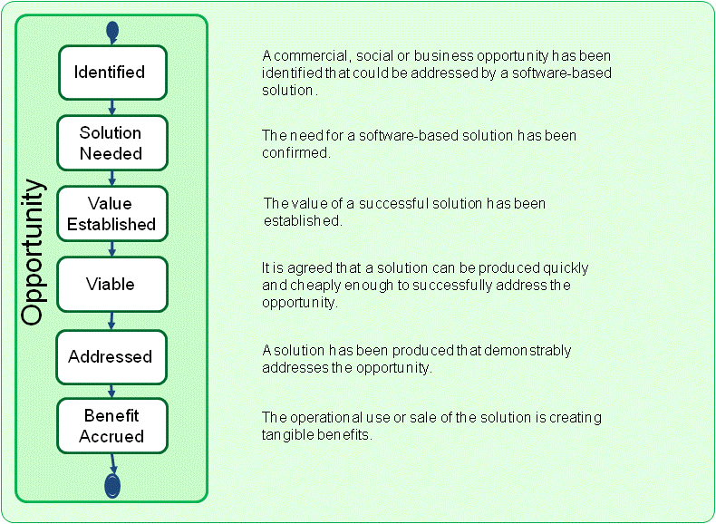

Essence Kernel
Opportunity: The set of circumstances that makes it appropriate to develop or change a software system.
The opportunity articulates the reason for the creation of the new, or changed, software system. It represents the team’s shared understanding of the stakeholders’ needs, and helps shape the requirements for the new software system by providing justification for its development.
Most software engineering work is initiated by the stakeholders that own and use the software system. Their inspiration is usually some combination of problems, suggestions and directives, which taken together provide the development team with an opportunity to create a new or improved software system. Occasionally it is the development team itself that originates the opportunity that they must then sell to the other stakeholders to get funding and support. In many cases the software system only provides part of the solution needed to exploit the opportunity and the development team must co-ordinate their work with other teams to ensure that they actually deliver a useful, and deployable system.
In all cases understanding the opportunity is an essential part of software engineering, as it enables the team to:
It is the opportunity that unites the stakeholders and provides the motivation for producing a new or updated software system. It is by understanding the opportunity that you can identify the value, and the desired outcome that the stakeholders hope to realize from the use of the software system either alone or as part of a broader business, or technical solution.
During the development of a software system the opportunity progresses through several state changes. As presented in the figure below, these are identified, solution needed, value established, viable, addressed, and benefit accrued. These states indicate significant points in the team’s progression of the opportunity from the initial formulation of an idea to use a software system through to the accrual of benefit from its use. They indicate (1) when the opportunity is first identified, (2) when the opportunity has been analyzed and it has been confirmed that a solution is needed, (3) when the opportunity’s value is established and the desired outcomes required of the solution are clear, (4) when enough is known about the cost of creating and using the proposed solution that it is clear that the pursuit of the opportunity is viable, (5) when a solution is available that demonstrably shows that the opportunity has been addressed, and finally (6) when benefit has been accrued from the use of the resulting solution.

The opportunity is first identified. The opportunity could be to entertain somebody, learn something, make some money, or even to change the world. Regardless of the kind of opportunity presented, if it is not understood by the team it is unlikely that they will produce an appropriate software system. For software engineering endeavors the opportunity is usually identified by the stakeholders that own and use the software system, and typically takes the form of an idea for a way to improve the current way of doing something, increase market share or apply a new or innovative technology.
Different stakeholders will see the opportunity in different ways, and they will be looking for different results from any software system produced to address it. It is important that the different stakeholder perspectives are understood and used to increase the team’s understanding of the opportunity. Analyzing the opportunity to understand the stakeholder’s needs and any underlying problems is essential to ensure that an appropriate system is produced and a satisfactory return-on-investment is generated.
Once the opportunity has been analyzed, and it has been agreed that a software-based solution is needed, it is possible to determine the value that the solution is expected to generate. Progressing the opportunity to value established is an important step in determining whether or not to proceed with work to address the opportunity as it means that the prize is clear to everyone involved.
The next step is to establish the viability of the opportunity. An opportunity is viable when a solution can be envisaged that it is feasible to develop and deploy within acceptable time and cost constraints. Although addressing the opportunity may be a very valuable thing to do it is probably not a good idea if the resources expended will be greater than the benefits accrued.
Once it has been agreed that the opportunity is viable then the team can be confident that a software system can be produced that will not just address the opportunity but will be acceptable to all of the stakeholders. As releases of the software system become available their viability must be continuously checked to ensure that they meet the needs of the stakeholders. After a suitable software system has been made available then, as far as the development team is concerned, the opportunity has been addressed. It is now up to the users of the system to actually use it to generate value and make sure that for this opportunity there is benefit accrued.
It is important that the team understands the current state of the opportunity so that they can ensure that an appropriate software system is developed, one that will satisfy the stakeholders and result in a tangible benefit being accrued.
A commercial, social or business opportunity has been identified that could be addressed by a software-based solution.
The alpha is in this state when:
The need for a software-based solution has been confirmed.
The alpha is in this state when:
The value of a successful solution has been established.
The alpha is in this state when:
It is agreed that a solution can be produced quickly and cheaply enough to successfully address the opportunity.
The alpha is in this state when:
A solution has been produced that demonstrably addresses the opportunity.
The alpha is in this state when:
The operational use or sale of the solution is creating tangible benefits.
The alpha is in this state when:
N/A
N/A
Copyright © 2012 Ivar Jacobson International AB, Florida Atlantic University, Fujitsu, Impetus, International Business Machines Corporation, KTH Royal Institute of Technology, Metamaxim Ltd., PEM Systems, Stiftelsen SINTEF, University of Duisburg-Essen. , ver. 1.0.3